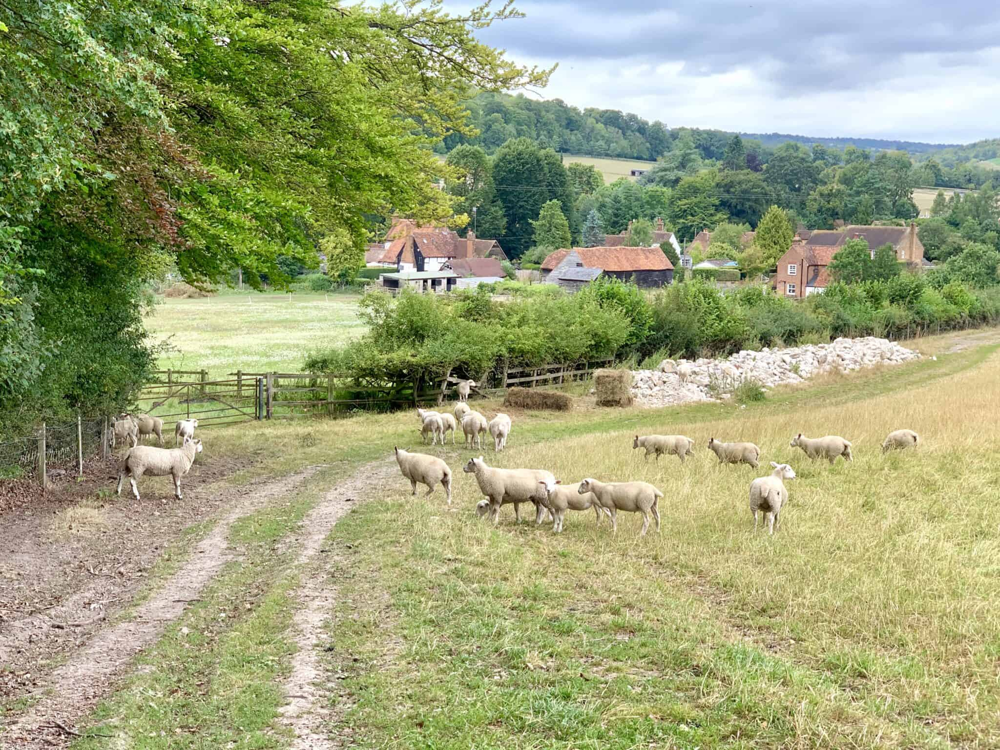

source
 ⇦
⇦
I like to go on one-day cycling trips on the weekend, both road bike and mountain bike. My priorities are:
Having done tens (hundreds?) of these trips, I thought I'd summarise the best places to go for people that share my priorities. The destinations are somewhat ordered from best to worst.
Firstly though, here's why you should invest in an Ordnance Survey subscription for decent route planning. Here's a semi-random bit of countryside near Sevenoaks in Google maps:
And the same area in 1:50,000 Ordnance survey:
Let's consider all the useful things we can now see:
Now, on to the destinations...
Easily the nicest countrside in the South East, rolling hills, nice villages, sheep, tiny low-traffic gravel-strewn roads.

source
Most people that visit the Chilterns seem to go around the Tring area - avoid this bit - the roads are busier and the countryside is pretty meh. Stick to the area west of Marlow/north of Henley, you won't regret. Bridleways are pretty dull on a mountain bike, but fun on a road bike - although they can turn to chalky mush if it's been raining.
Rail options:
Quick and frequent access from London Bridge, monster hills (for the south east of England), minimal traffic if you plan well. What's not to like?
The North Downs ridge just west of Sevenoaks has the best climbs, famous hills include:
Around Chiddingstone, Hever and Penshurst is nice quiet riding. Go too far from there and the roads get busier. The High Weald may look tempting, but is pretty crap for cycling as there are basically just a few nasty B roads that cross it. Tunbridge Wells is a lovely town and the valley to the west of it is really cute.
A nice way to see the a big chunk of the area is to ride from Tonbridge to Sevenoaks.
Do you like suspiciously clean bikes and stupid sunglasses? Perfect, the Surrey Hills are for you.
After you've been overtaken by some weekend warriors on Box Hill, there are plentiful climbs on both the North Downs ridge and the main Surrey Hills ridge. The former being slightly less well trodden 'classic English countryside', the latter a pine-covered sandy ridge with some pretty villages. There's a fair amount of traffic here versus the rest of the list, both vehicular and other bikes (there really are a lot a lot of roadies).
Get a train to Guildford or Dorking (quick and frequent), or if you don't mind sitting for ages, a chugger to Westhumble to get straight in on the action. Example loop from Guildford.
Check out cycle.travel for the National Cycle Network routes (all pretty flat, but often quiet). Routes around Canterbury in particular make an easy summer's day out and can be combined with plenty of local cider. HS1 is quick (it's all in the name) and surprisingly you can just throw your bike on.
Lots of historical villages, hill forts etc. plus Salisbury itself is lovely. Countryside/cycling-wise though, good as a one-off, but too far for what you get in return.
Too flat, often way more traffic than you'd expect (excepting some of the National Cycle Network routes).
As far as I know, the only really good purpose-built trails in the south east (forget Swinley forest - it's way too flat). Look on Trailforks for routes, but also try trudging through Strava segments - things change fast and there's lots of secret bits.
Get the train to Guildford or Dorking (both pretty frequent and quick) and take whatever bridleways you fancy - they're all prety decent. If you want a big day out, do one to the other, joining up trails. For some reason, the ticket inspectors seem happy if you have a return to either station.
Definitely not in the South East, but Newport is only 1 hour 40 away from Paddington (although you have to book bike slots), so it's feasible to do a day trip. Cwmcarn has two really excellent and long purpose-built trails, you can ride to the start and do both in 5-7 hours. There's also some off-piste stuff (trawl through Strava segments).
From Newport to the trails is around an hours ride - either a nice ride along the canal or straight up into the woods from the Cwmbrân side - both are very pleasant!
About 20 minutes of medium level fun to be had - always more knackering than I remember. There are two parts to it - not just the bit directly next to the Velodrome!
You can get Thameslink to Hassocks and ride to the south downs within 15 minutes. Bridleways in the area are OK, but maybe a bit tame - maybe this is what they came up with gravel bikes for? Doing the whole of the South Downs Way (Winchester to Eastbourne) is a very long day - maybe one for the bucket list. I've done a big chunk of it and there are nice views + it was super cool to not really do any roads for a whole day.